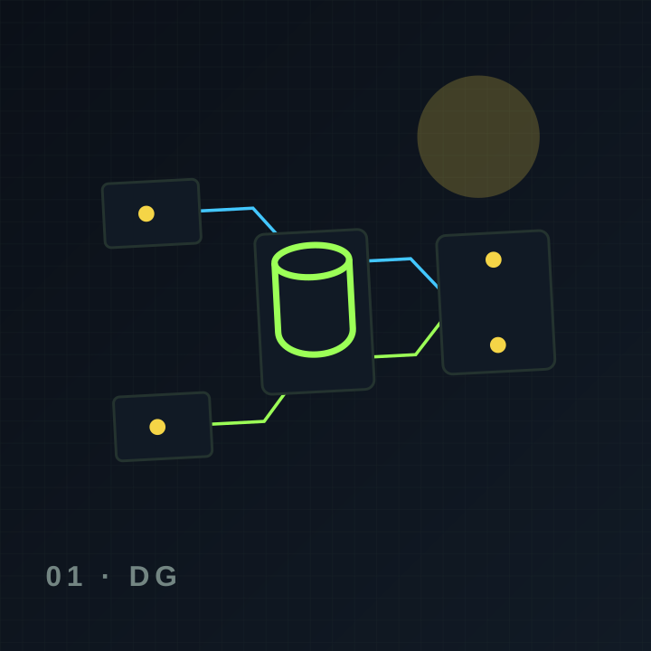

Experiencia
Web, CLI y extensión para VS Code.
Capas, componentes, integraciones y límites operativos de la solución.
La propuesta separa experiencia, lógica, datos, modelos y controles para que cada decisión tenga un dueño.
Web, CLI y extensión para VS Code.
FastAPI, LangGraph y políticas de aprobación.
Docling, embeddings, Qdrant y recuperación híbrida.
Oracle 19c, Azure DevOps, archivos locales y Git.
Ollama y modelos locales sin dependencia de internet.
RBAC, ACL, auditoría, secretos y modo lectura.

Contenido estructurado para personas, buscadores y motores de respuesta.
La arquitectura objetivo bloquea salida para componentes sensibles y ejecuta modelos, vector store y procesamiento localmente.
Cada conclusión debe citar fuentes, separar hechos de recomendaciones y pasar validaciones y aprobación humana.
No. La entrega web representa UX, arquitectura y roadmap; las integraciones requieren credenciales, red y desarrollo del MVP.